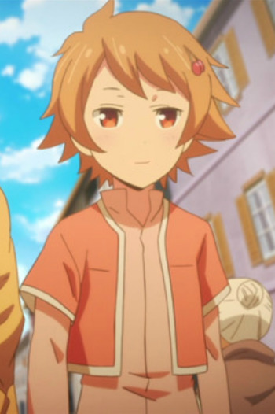

Kokoa Amano or Kokoa Ishii is a Japanese voice actress.
- Gender: Female
- Birthday: July 6, 2004
- Hometown: Chiba, Japan
- Hobby: Tap Dancing

| |
Kokoa Amano or Kokoa Ishii is a Japanese voice actress.
|
|---|
 |
Misa Maruno | Urahara | Misa Maruno is a little girl. She has an exciting personality. |
|  | Sakura | Kino's Journey: The Beautiful World - The Aminated Series | Sakura is a girl from the country that Kino visited in the anime. She stares some similarities with Kino. |